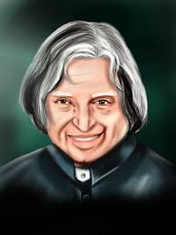

Avul Pakir Jainulabdeen Abdul Kalam better known as A. P. J. Abdul Kalam 15 October 1931 – 27 July 2015), was the 11th President of India from 2002 to 2007. A career scientist turned statesman, Kalam was born and raised in Rameswaram, Tamil Nadu, and studied physics and aerospace engineering. He spent the next four decades as a scientist and science administrator, mainly at the Defence Research and Development Organisation (DRDO) and Indian Space Research Organisation (ISRO) and was intimately involved in India's civilian space programme and military missile development efforts.[1] He thus came to be known as the Missile Man of India for his work on the development of ballistic missile and launch vehicle technology.[2][3][4] He also played a pivotal organisational, technical, and political role in India's Pokhran-II nuclear tests in 1998, the first since the original nuclear test by India in 1974.[5]
Kalam was elected as the 11th President of India in 2002 with the support of both the ruling Bharatiya Janata Party and the then-opposition Indian National Congress. Widely referred to as the "People's President,"[6] he returned to his civilian life of education, writing and public service after a single term. He was a recipient of several prestigious awards, including the Bharat Ratna, India's highest civilian honour.
While delivering a lecture at the Indian Institute of Management Shillong, Kalam collapsed and died from an apparent
cardiac arrest on 27 July 2015, aged 83.[7] Thousands including national-level dignitaries attended the funeral
ceremony held in his hometown of Rameshwaram, where he was buried with full state honours.[8].
After graduating from the Madras Institute of Technology in 1960, Kalam joined the Aeronautical Development
Establishment of the Defence Research and Development Organisation (by Press Information Bureau, Government
of India) as a scientist after becoming a member of the Defence Research & Development Service (DRDS). He started
his career by designing a small hovercraft, but remained unconvinced by his choice of a job at DRDO. Kalam was
also part of the INCOSPAR committee working under Vikram Sarabhai, the renowned space scientist. In 1969,
Kalam was transferred to the Indian Space Research Organisation (ISRO) where he was the project director of India's
first Satellite Launch Vehicle (SLV-III) which successfully deployed the Rohini satellite in near-earth orbit in July 1980;
Kalam had first started work on an expandable rocket project independently at DRDO in 1965. In 1969, Kalam
received the government's approval and expanded the programme to include more engineers
Kalam addresses engineering students at IIT Guwahati
In 1963 to 1964, he visited NASA's Langley Research Center in Hampton, Virginia; Goddard Space Flight Center in
Greenbelt, Maryland; and Wallops Flight Facility. Between the 1970s and 1990s, Kalam made an effort to
develop the Polar Satellite Launch Vehicle (PSLV) and SLV-III projects, both of which proved to be successful.
Kalam was invited by Raja Ramanna to witness the country's first nuclear test Smiling Buddha as the representative
of TBRL, even though he had not participated in its development. In the 1970s, Kalam also directed two projects,
Project Devil and Project Valiant, which sought to develop ballistic missiles from the technology of the successful
SLV programme. Despite the disapproval of the Union Cabinet, Prime Minister Indira Gandhi allotted secret funds
for these aerospace projects through her discretionary powers under Kalam's directorship. Kalam played an
integral role convincing the Union Cabinet to conceal the true nature of these classified aerospace projects.[28] His
research and educational leadership brought him great laurels and prestige in the 1980s, which prompted the
government to initiate an advanced missile programme under his directorship. Kalam and Dr V S Arunachalam,
metallurgist and scientific adviser to the Defence Minister, worked on the suggestion by the then Defence
Minister, R. Venkataraman on a proposal for simultaneous development of a quiver of missiles instead of taking
planned missiles one after another. R Venkatraman was instrumental in getting the cabinet approval for
allocating ?388 crores for the mission, named Integrated Guided Missile Development Programme (IGMDP) and
appointed Kalam as the chief executive. Kalam played a major part in developing many missiles under the
mission including Agni, an intermediate range ballistic missile and Prithvi, the tactical surface-to-surface missile
, although the projects have been criticised for mismanagement and cost and time overruns.
Kalam served as the Chief Scientific Adviser to the Prime Minister and Secretary of the Defence Research and Development Organisation from July 1992 to December 1999. The Pokhran-II nuclear tests were conducted during this period in which he played an intensive political and technological role. Kalam served as the Chief Project Coordinator, along with Rajagopala Chidambaram, during the testing phase.[11][31] Media coverage of Kalam during this period made him the country's best known nuclear scientist.[32] However, the director of the site test, K Santhanam, said that the thermonuclear bomb had been a "fizzle" and criticisied Kalam for issuing an incorrect report.[33] Both Kalam and Chidambaram dismissed the claims.[34]
In 1998, along with cardiologist Soma Raju, Kalam developed a low cost coronary stent, named the "Kalam-Raju Stent".[35][36] In 2012, the duo designed a rugged tablet computer for health care in rural areas, which was named the "Kalam-Raju Tablet
BACK TO MAIN PAGE